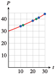

Exercises 4.8 Homework 4.3
¶For Problems 1-10, find each logarithm without using a calculator.
1.
\(\log_7 49\)
\(\log_2 32 \)
\(2\)
\(5\)
2.
\(\log_4 64\)
\(\log_3 27 \)
3.
\(\log_3 \sqrt{3} \)
\(\log_3 \dfrac{1}{3} \)
\(\dfrac{1}{2} \)
\(-1\)
4.
\(\log_5 \dfrac{1}{5} \)
\(\log_5 \sqrt{5} \)
5.
\(\log_4 4 \)
\(\log_6 1 \)
\(1 \)
\(0 \)
6.
\(\log_{10} 1 \)
\(\log_{10} 10^{-6} \)
7.
\(\log_8 8^5 \)
\(\log_7 7^6 \)
\(5 \)
\(6 \)
8.
\(\log_{10} 10^{-4} \)
\(\log_{10} 10^{-6} \)
9.
\(\log_{10} 0.1 \)
\(\log_{10} 0.001 \)
\(-1 \)
\(-3 \)
10.
\(\log_{10} 10,000 \)
\(\log_{10} 1000 \)
For Problems 11-22, rewrite the equation in logarithmic form.
11.
\(2^{10}=1024 \)
\(\log_2 1024=10\)
12.
\(11^{4}=14,641 \)
13.
\(10^{0.699}\approx 5 \)
\(\log_{10} 5\approx 0.699\)
14.
\(10^{-0.602}\approx 0.25 \)
15.
\(t^{3/2}=16 \)
\(\log_{t} 16=\dfrac{3}{2} \)
16.
\(v^{5/3}=12 \)
17.
\(0.8^{1.2}=M \)
\(\log_{0.8} M=1.2 \)
18.
\(3.7^{2.5}=Q \)
19.
\(x^{5t}=W-3 \)
\(\log_{x} (W-3)=5t \)
20.
\(z^{-3t}=2P+5 \)
21.
\(3^{-0.2t}=2N_0 \)
\(\log_{3} (2N_0)=-0.2t \)
22.
\(10^{1.3t}=3M_0 \)
For Problems 23–26,
Solve each equation, writing your answer as a logarithm.
Use trial and error to approximate the logarithm to one decimal place.
For Problems 27–30,
By computing successive powers of the base, trap each log between two integers.
Use a graph to approximate each logarithm to the nearest hundredth. (Hint: Use the conversion equations to rewrite \(x = \log_b y\) as an appropriate exponential equation.)
For Problems 31-34, use a calculator to approximate each logarithm to four decimal places. Make a conjecture about logarithms based on the results of each problem.
31.
\(\log_{10} 5.43\)
\(\log_{10} 54.3\)
\(\log_{10} 543\)
\(\log_{10} 5430\)
\(0.7348\)
\(1.7348\)
\(2.7348\)
\(3.7348\)
When the input to the common logarithm is multiplied by \(10\text{,}\) the output is increased by \(1\text{.}\)
32.
\(\log_{10} 0.625\)
\(\log_{10} 0.0625\)
\(\log_{10} 0.00625\)
\(\log_{10} 0.000625\)
33.
\(\log 2\)
\(\log 4 \)
\(\log 8 \)
\(\log 16\)
\(0.3010\)
\(0.6021\)
\(0.9031\)
\(1.2041\)
When the input to the common logarithm is doubled, the output is increased by about \(0.3010\text{.}\)
34.
\(\log 4\)
\(\log 0.25\)
\(\log 5\)
\(\log 0.2\)
For Problems 35-44, solve for \(x\text{.}\) Round your answers to hundredths.
35.
\(10^{-3x}=5 \)
\(-0.23\)
36.
\(10^{-5x}=76 \)
37.
\(25\cdot 10^{0.2x}=80 \)
\(2.53\)
36.
\(8\cdot 10^{1.6x}=312 \)
39.
\(12.2=2\left(10^{1.4x}\right)-11.6 \)
\(0.77\)
40.
\(163=3\left(10^{0.7x}\right)-49.3 \)
41.
\(3\left(10^{-1.5x}\right)-14.7=17.1 \)
\(-0.68\)
42.
\(4\left(10^{-0.6x}\right)+16.1=28.2 \)
43.
\(80\left(1-10^{-0.2x}\right) =65 \)
\(3.63\)
44.
\(250\left(1-10^{-0.3x}\right) =100 \)
In Problems 45–48, each calculation contains an error. Find and correct it.
45.
\(2\cdot 5^x\ne 10^x\text{;}\) the first step should be to divide both sides of the equation by \(2\text{;}\) \(x = \log_5 424\text{.}\)
46.
47.
\(\frac{10^{4x}}{4} \ne 10^x\text{;}\) the first step should be to write \(4x = \log 20\text{;}\) \(x = \frac{\log 20}{4}\text{.}\)
48.
49.
The population of the state of California increased during the years 1990 to 2000 according to the formula
where \(t\) is measured in years since \(1990\text{.}\)
What was the population in \(2000\text{?}\)
Assuming the same rate of growth, estimate the population of California in the years \(2010\text{,}\) \(2015\text{,}\) and \(2020\text{.}\)
When did the population of California reach \(35,000,000\text{?}\)
When should the population reach \(40,000,000\text{?}\)
Graph the function \(P\) with a suitable domain and range, then verify your answers to parts (a) through (d).
\(33,855,812\)
\(38,515,295\text{;}\) \(~41,080,265\text{;}\) \(~43,816,051\)
\(2002\)
\(2012\)
- 
50.
The population of the state of New York increased during the years 1990 to 2000 according to the formula
where \(t\) is measured in years since \(1990\text{.}\)
What was the population in \(2000\text{?}\)
Assuming the same rate of growth, estimate the population of New York in the years \(2010\text{,}\) \(2015\text{,}\) and \(2020\text{.}\)
When did the population of New York reach \(20,000,000\text{?}\)
When should the population reach \(30,000,000\text{?}\)
Graph the function \(P\) with a suitable domain and range, then verify your answers to parts (a) through (d).
51.
The absolute magnitude, \(M\text{,}\) of a star is a measurement of its brightness. For example, our Sun, not a particularly bright star, has magnitude \(M = 4.83\text{.}\) The magnitude in turn is a measure of the luminosity, \(L\text{,}\) or amount of light energy emitted by the star, where
The luminosity of a star is measured in solar units, so that our Sun has luminosity \(L = 1\text{.}\) Use the values of \(L\) and \(M\) for the Sun to calculate a value of \(L_0\) in the equation above.
Is luminosity an increasing or decreasing function of magnitude? Graph the function on the domain \([-3, 3]\text{.}\) What is its range on that domain?
The luminosity of Sirius is \(22.5\) times that of the Sun, or \(L = 22.5\text{.}\) Calculate the magnitude of Sirius.
If two stars differ in magnitude by \(5\text{,}\) what is the ratio of their luminosities?
A decrease in magnitude by \(1\) corresponds to an increase in luminosity by what factor? Give an exact value and an approximation to four decimal places.
Normal stars have magnitudes between \(-10\) and \(19\text{.}\) What range of luminosities do stars exhibit?
\(85.5\)
-
Decreasing; range: \([5.4, 1355.2]\)

\(1.45\)
\(\dfrac{1}{100} \)
\(10^{0.4}\approx 2.5119 \)
\(2.15\times 10^{-6}\) to \(855,067\)
52.
The loudness of a sound is a consequence of its intensity, \(I\text{,}\) or the amount of energy it generates, in watts per square meter. The intensity is related to the decibel level, \(D\text{,}\) which is another measure of loudness, by
Is intensity an increasing or decreasing function of decibel level? The faintest sound a healthy human can hear is \(0\) decibels. What is the intensity of a \(0\) decibel sound?
A whisper produces an energy intensity of \(10^{-9}\) watts per square meter. What is the decibel level of a whisper?
If two sounds differ in loudness by \(10\) decibels, what is the ratio of their intensities?
An increase in loudness of \(1\) decibel produces a just noticeable difference to the human ear. By what factor does the intensity increase?
Sounds of \(130\) decibels are at the threshold of pain for people. What is the range of the intensity function on the domain \([0, 130]\text{?}\)
The atmospheric pressure decreases with altitude above the surface of the Earth. For Problems 53–58, use the function
where altitude, \(h\text{,}\) is given in miles and atmospheric pressure, \(P\text{,}\) in inches of mercury. Graph this function in the window
Solve the problems below algebraically, and verify with your graph.
53.
The elevation of Mount Everest, the highest mountain in the world, is \(29,028\) feet. What is the atmospheric pressure at the top?
54.
The elevation of Mount McKinley, the highest mountain in the United States, is \(20,320\) feet. What is the atmospheric pressure at the top?
55.
How high above sea level is the atmospheric pressure \(20.2\) inches of mercury?
\(1.91\) mi
56.
How high above sea level is the atmospheric pressure \(16.1\) inches of mercury?
57.
Find the height above sea level at which the atmospheric pressure is equal to one-half the pressure at sea level.
58.
Find the height above sea level at which the atmospheric pressure is equal to one-fourth the pressure at sea level.
What is the altitude at sea level?
For Problems 59-66, simplify the expression.
59.
\(\log_2 (\log_4 16) \)
\(1\)
60.
\(\log_5 (\log_5 5) \)
61.
\(\log_{10} [\log_3(\log_5 125) ] \)
\(0\)
62.
\(\log_{10} [\log_2 (\log_3 9)] \)
63.
\(\log_2[\log_2 (\log_3 81)] \)
\(1\)
64.
\(\log_4 [\log_2 (\log_3 81)] \)
65.
\(\log_{b} (\log_b b) \)
\(0\)
66.
\(\log_{b} (\log_a a^b) \)